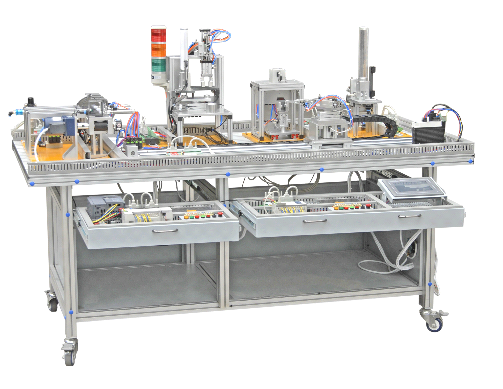

Ingeniería Electrónica · UMSA
Planta de manufactura flexible XK-335B
Documentación de la planta del Laboratorio de Control: planos, programas de PLC, informes, datasheets y el trabajo de cada semestre desde 2022.
La planta tiene cinco unidades (transporte, alimentación, ensamblaje, procesamiento y selección), cada una con su PLC Siemens S7-200 en red PPI, y desde II-2026 un brazo de 4 grados de libertad conectado a la misma red.

Unidades
Elija una para ver sus documentosSemestres
Lo que se hizo en cada gestiónCómo agregar archivos
- Suba el archivo a la carpeta del semestre en GitHub, por ejemplo
semestres/2026_II/planos/pid/. Lo que sirve para todos los semestres (datasheets, manuales, modelos 3D) va englobal/. - Use nombres sin tildes ni espacios:
seleccion_pid.dwg. Si el nombre incluye la unidad (transporte, alimentacion, ensamblaje, procesamiento, seleccion, brazo), la página lo asigna solo. - La página se actualiza sola uno o dos minutos después del commit en
main. - Para cambiar un título o una descripción, o agregar un video de YouTube, edite
config/archivos.jsonoconfig/videos.json.
Más detalles en el README del repositorio.